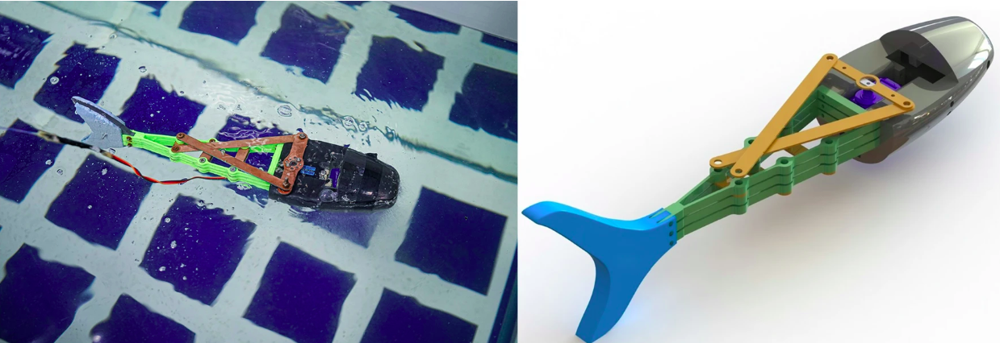

Publications
Design and control of soft biomimetic pangasius fish robot using fin ray effect and reinforcement learning

Youssef, S. M., Soliman, M., Saleh, M. A., Elsayed, Ahmed H., & Radwan, A. G. (2022).
Design and control of soft biomimetic pangasius fish robot using fin ray effect and reinforcement learning.
Scientific Reports, 12(1), 21861.
Publisher: Nature Publishing Group UK London